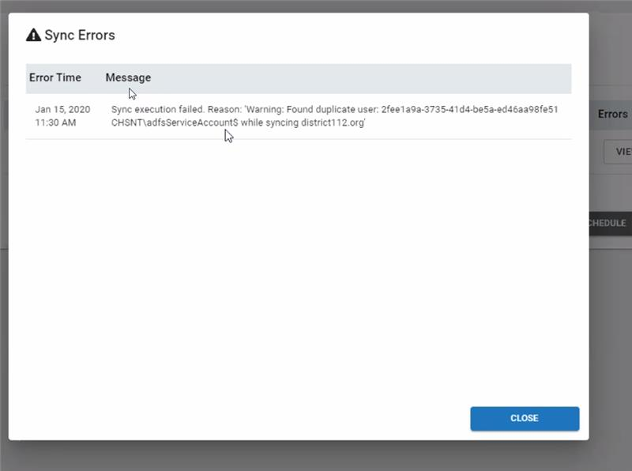

Summary: SbPAM-2115 AD Service account, deleted and readded later causes AD Sync to fail. Running Active Directory sync for a domain that contains a service account that was deleted and then added back with the same sAMAccountname causes Sync error. This patch will stop syncing the Service Account entries because they are not used by SbPAM.
Issue: Summary:
SbPAM-2115 AD Service account, deleted and readded later causes AD Sync to fail.
Running Active Directory sync for a domain that contains a service account that was deleted and then added back with the same sAMAccountname causes Sync error.

This patch will stop syncing the Service Account entries because they are not used by SbPAM.
Submitted by:
Kevin Horvatin
Affected Versions:
Versions before 1.3.228.0
Affected Module:
Active Directory Sync
Dev Ticket:
SbPAM-2115
Resolved in Version:
1.3.228.0
KB Type:
Hotfix
Issue:
Active Directory Sync fails when Service Account is deleted and added with same sAMAccountname.
Modules Included
YouTrack/Escalations
Customers
Eastern Carver County Schools
Cumulative List of fixes included since Service Pack:
Instructions:
Run SbPAM.exe installer.
Instructions: Instructions:
Run SbPAM.exe installer.
https://downloads.stealthbits.com/access/files/SbPAMHotfixes/1.3/SbPAM.1.3.228.zip
Versions: Versions before 1.3.228.0
Dev Ticket: SbPAM-2115
Resolved In: 1.3.228.0
Salesforce Article ID: 2567